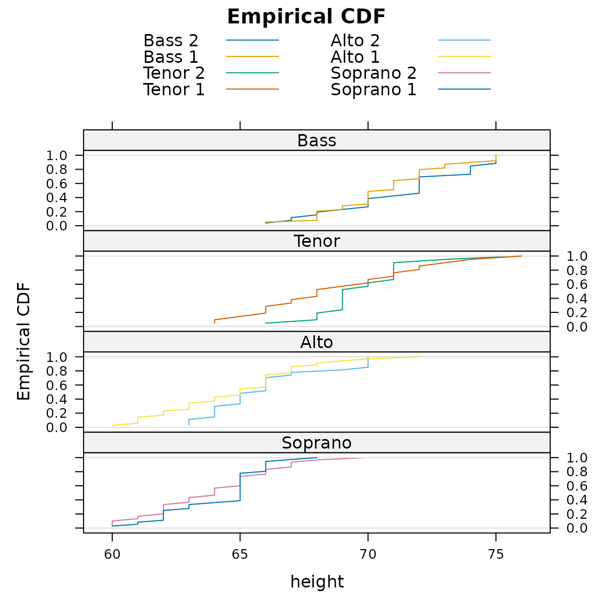
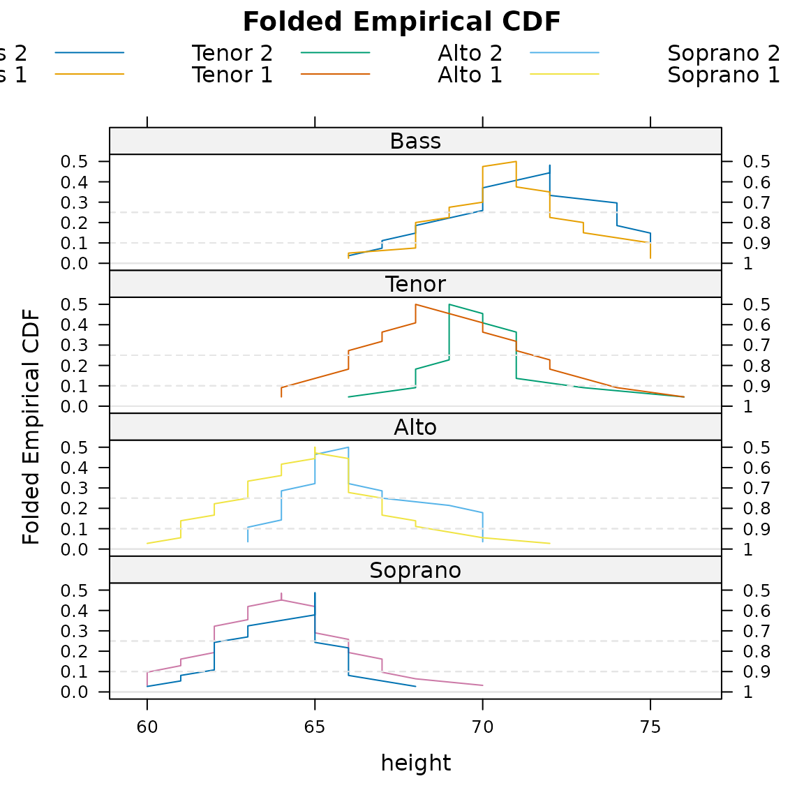
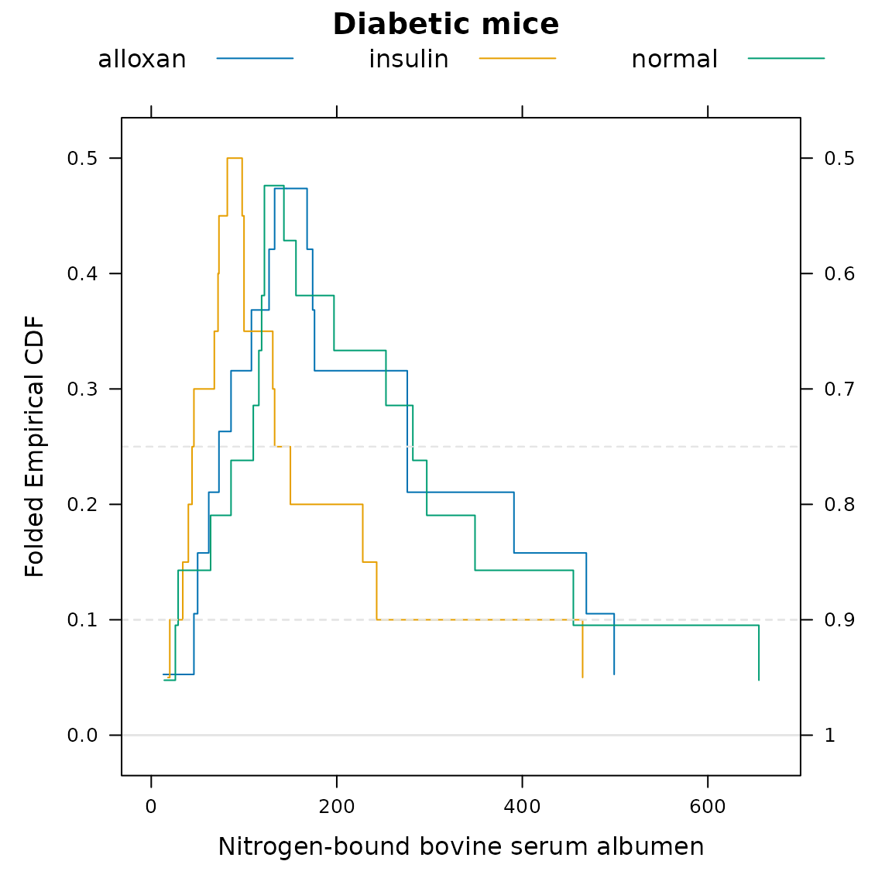

Introduction to the mountainplot package
Kevin Wright
2024.07.17
Source:vignettes/mountainplot_examples.Rmd
mountainplot_examples.RmdAbstract
The mountainplot package provide an extension to the
lattice package that allows for the construction of
mountain plots, which are also known as folded empirical cumulative
distribution plots.
Setup
Load the package and use the singer data from the
lattice package. Combine the first and second parts of each
voice part into a new variable called section.
library("mountainplot")
data(singer, package = "lattice")
parts <- within(singer, {
section <- voice.part
section <- gsub(" 1", "", section)
section <- gsub(" 2", "", section)
section <- factor(section)
})
# Change levels to logical ordering
parts$section <- factor(parts$section,
levels=c("Bass","Tenor","Alto","Soprano"))Mountain plot
A mountainplot, or folded empirical cumulative distribution function, is similar to an ordinary empirical CDF, but once the cumulative probability reaches 0.50, the CDF is inverted, decreasing back down instead of continuing upward.
Here is an example of the traditional empirical CDFs.
require(latticeExtra) # for ecdfplot## Loading required package: latticeExtra## Loading required package: lattice
ecdfplot(~height|section, data = parts, groups=voice.part, type='l',
layout=c(1,4),
main="Empirical CDF",
auto.key=list(columns=2), as.table=TRUE)
Here is a view of the same data shown with a mountain plot.
mountainplot(~height|section, data = parts,
groups=voice.part, type='l',
layout=c(1,4),
main="Folded Empirical CDF",
auto.key=list(columns=4), as.table=TRUE)
Monti (1995) suggests that a mountain plot is helpful with exploring data and makes it easier to:
- Determine the median.
- Determine the range.
- Determine central or tail percentiles of any specified value.
- Observe outliers.
- Observe unusual gaps in the data.
- Examine the data for symmetry.
- Compare multiple distributions.
- Visually examine the sample size.
Additionally, the area under the curve is equal to the mean absolute deviation (MAD) Xue and Titterington (2011).
Diabetic mice example
Huh (1995) developed at the same time the concept of the flipped empirical distribution function. The following code creates a mountainplot of Hand’s diabetic mice data, which can be compared to Huh’s version.
dmice <- data.frame(
albumen=c(156,282,197,297,116,127,119,29,253,122,349,110,143,64,26,86,122,455,655,14,
391,46,469,86,174,133,13,499,168,62,127,276,176,146,108,276,50,73,
82,100,98,150,243,68,228,131,73,18,20,100,72,133,465,40,46,34, 44),
group=c(rep('normal',20), rep('alloxan', 18), rep('insulin', 19))
)
mountainplot(~albumen, data=dmice, group=group, auto.key=list(columns=3),
main="Diabetic mice", xlab="Nitrogen-bound bovine serum albumen")